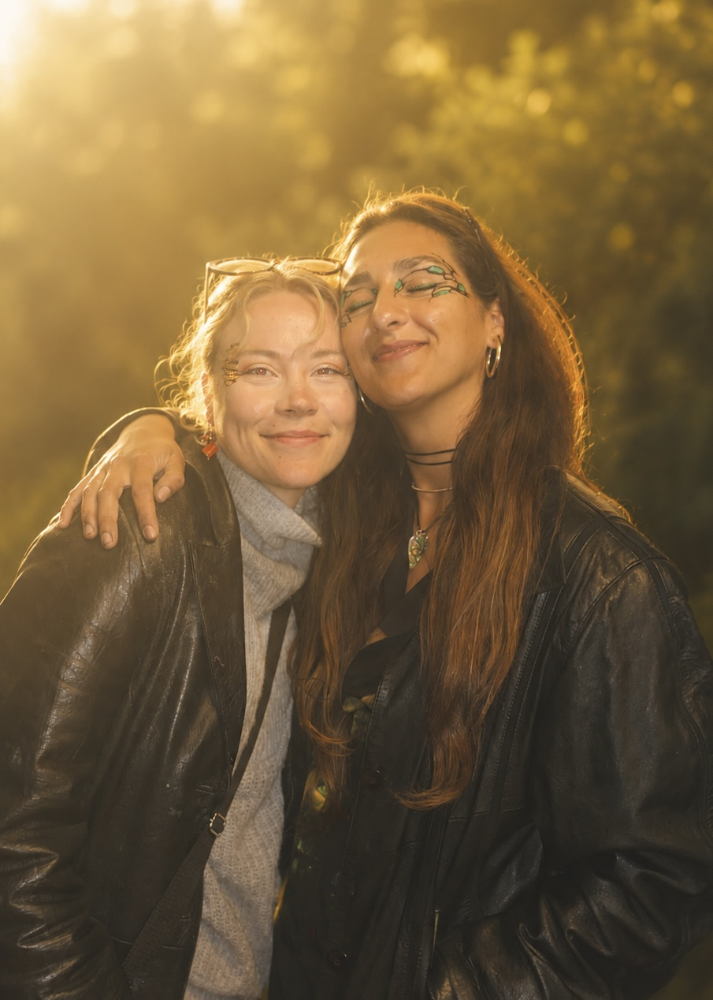

OM FARVERIG
VI ER FARVERIG.
Vi er Gabriela og Maria — ansigterne bag FARVERIG. For os er ansigtsmaling et kreativt håndværk, hvor mødet med mennesker er mindst lige så vigtigt som det færdige motiv.

Vi maler til alt fra fødselsdage og sommerfester til festivaler, kultur, shoots og events.
Fælles for det hele er lysten til at skabe noget personligt, legende og lidt uventet.
FARVERIG ER VORES LILLE KREATIVE UNIVERS — OG VI VIL GERNE HAVE, AT DET FØLES LIGE SÅ LEVENDE SOM DE MENNESKER, VI MØDER.
FØLG MED I DET FARVERIGE.
Her deler vi nye malinger, mennesker, øjeblikke og alt det, der sker bag kulissen.
FØLG @FARVERIGCPH